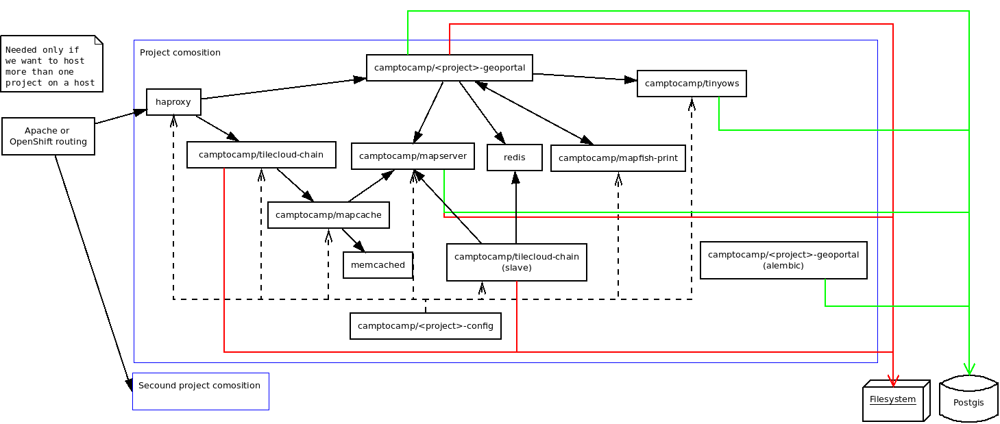

Use Docker to deploy your application¶
Architecture schema¶
Images¶
When we build the project it will generate the following images:
camptocamp/<package>_geoportal:latestcamptocamp/<package>_config:latest
The tag is by default latest, but you can change it by setting the DOCKER_TAG Makefile variable.
Docker compose files¶
docker-compose.yaml: The main file that describes the composition.
docker-compose-lib.yaml: Provide the base description of Geomapfish Docker services.
.env: Build from .env.sample the environment variable used by the composition.
docker-compose-dev.yaml: Use to start a webpack dev server.
docker-compose-build.yaml: Used by the docker-compose-run script.
Run the developer composition¶
docker-compose up -d
You can then access your application with http://172.17.0.1:8480/
Clean¶
Docker does not clean anything automatically, in particular it does not clean any images, therefore disk space may become problematic after a certain number of builds. You can use the following commands to manually remove Docker files.
If you use Docker version (docker --version) >= 1.13, use docker system prune to clean files;
you can add the --all option to do a deeper clean.
Otherwise:
docker ps --all --quiet --filter status=exited | xargs --no-run-if-empty docker rm
docker images | grep "<none>" | awk '{print $3}' | xargs --no-run-if-empty docker rmi || true
docker volume ls --quiet --filter dangling=true | grep '[0-9a-f]\{64\}' | xargs --no-run-if-empty docker volume rm
This will remove:
* Containers with exit status.
* Images with version on name as `<none>`.
* Unnamed dangling volumes.
You can also remove the unused named images, that should be done manually:
List the images with
docker images.Remove the unwanted images with
docker rmi <image>:<tag>.